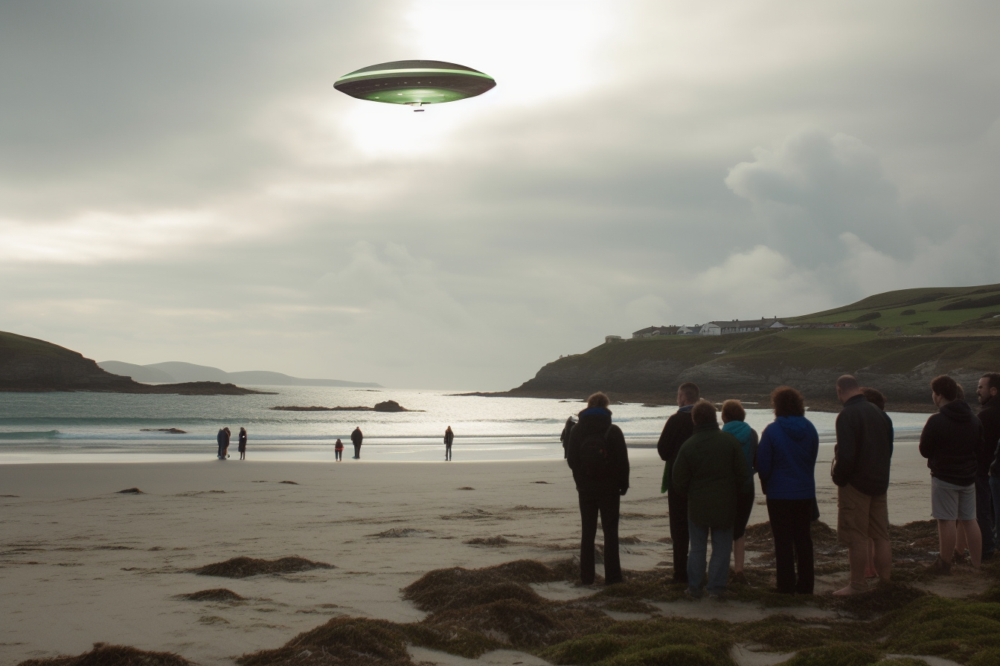

Breaking: UFO spotted in South West Kerry!
By |
A UFO has been spotted in the skies above South West Kerry, leaving locals baffled and curious. The unidentified flying object was seen hovering over the Derrynane Beach around noon, emitting a bright green light and a low humming sound.
Some witnesses claimed that they saw a small figure emerge from the UFO and wave at them, before disappearing back inside. Others said that they felt a strange sensation of warmth and peace when they looked at the UFO.
"I couldn't believe my eyes," said Mary O'Sullivan, a resident of Caherdaniel who was having a picnic with her family on the beach. "It was like something out of a sci-fi movie. I thought it was a prank at first, but then I realized it was real."
"I was amazed," said John Murphy, a tourist from Dublin who was visiting the South West Kerry Family Resource Centre. "I've always been interested in aliens and UFOs, but I never expected to see one in person. It was a once-in-a-lifetime experience."
The UFO stayed in the air for about 15 minutes, then zoomed away at an incredible speed, leaving behind a trail of sparks. No official explanation has been given for the phenomenon, but some experts have suggested that it could be a secret military project, a weather balloon, or a drone.
However, many people believe that it was indeed an alien spacecraft, and that it came to South West Kerry for a reason. Some speculate that it was attracted by the natural beauty and rich culture of the region, while others think that it was delivering a message of peace and harmony.
Whatever the case may be, the UFO sighting has sparked a lot of interest and excitement among locals and visitors alike, and has put South West Kerry on the map as a potential hotspot for extraterrestrial activity.
Disclaimer: This is a fictional news article and is intended for entertainment purposes only.
None of the events or characters depicted here are real or based on any factual sources.